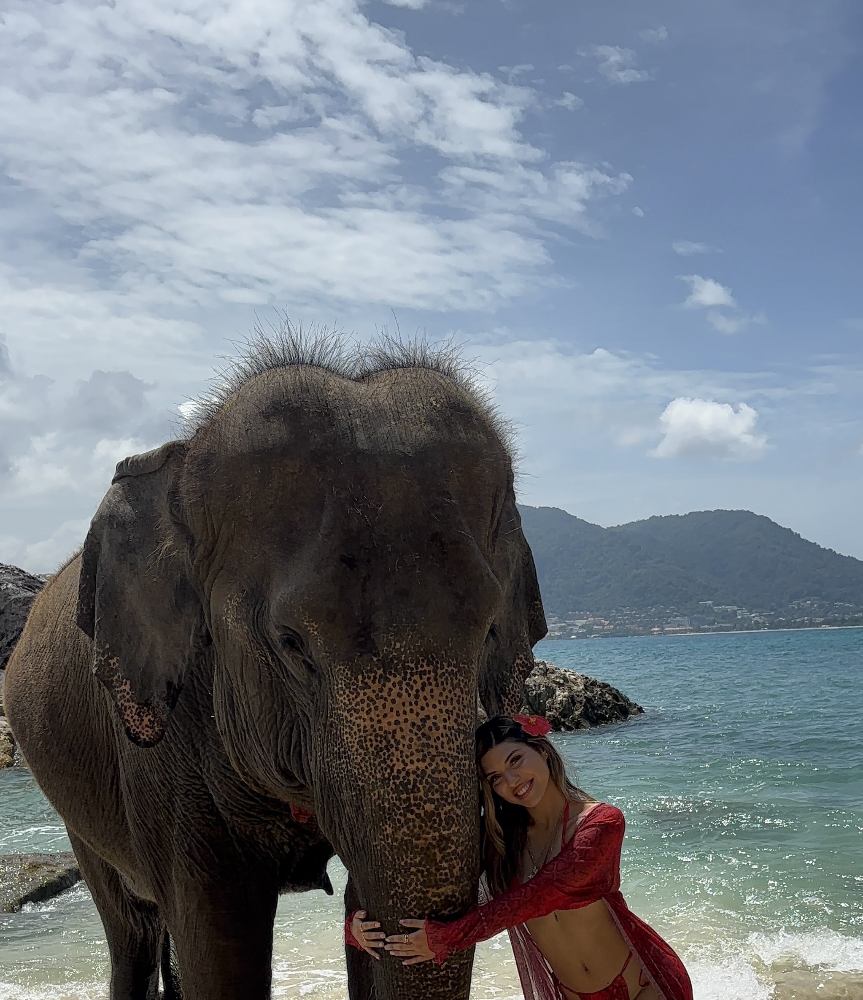
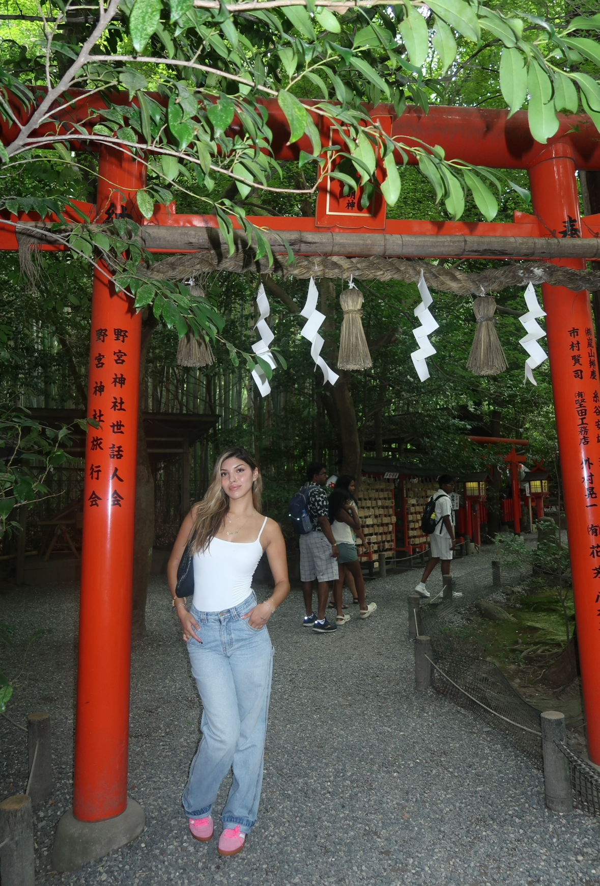

My Top 5 Favorite Cities That I've Been To

Phuket, Thailand
Phuket has been the most beautiful and magical place I have ever traveled to. The beaches are unreal and the weather was amazing. I would definitely go back in a heart beat. I spent almost every day on the beach or in a local cafe. Nothing has compared to it!

Tokyo, Japan
Tokyo is my second favorite city and I loved every second of it. Although, I also visited Kyoto and Osaka, Tokyo has my heart the most. The culture, the food and the city-life is amazing. I can't wait to go back soon!
San Juan, Puerto Rico
Puerto Rico was definitely a vibe and I can spend every night dancing there. The beaches are stunning and the food is delicious. As a latina, I love the music and the people!

Bali, Indonesia
Bali was such a serene and peaceful place. I got to cross off something on my bucket list which was yoga in a Bali villa surrounded by jungle. It was one of the coolest things I've ever done. I would love to spend some more months there in the future. I loved exploring the beaches and the rice terraces.
Montego Bay, Jamaica
Jamaica was such a fun and lively place to visit. I loved going on adventures like zip-lining and river rafting. I was able to spoil myself a lot on this trip so that was a huge plus lol!